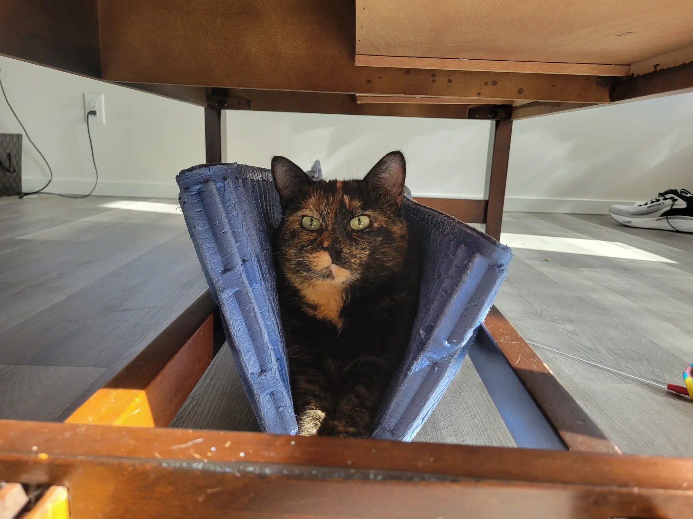
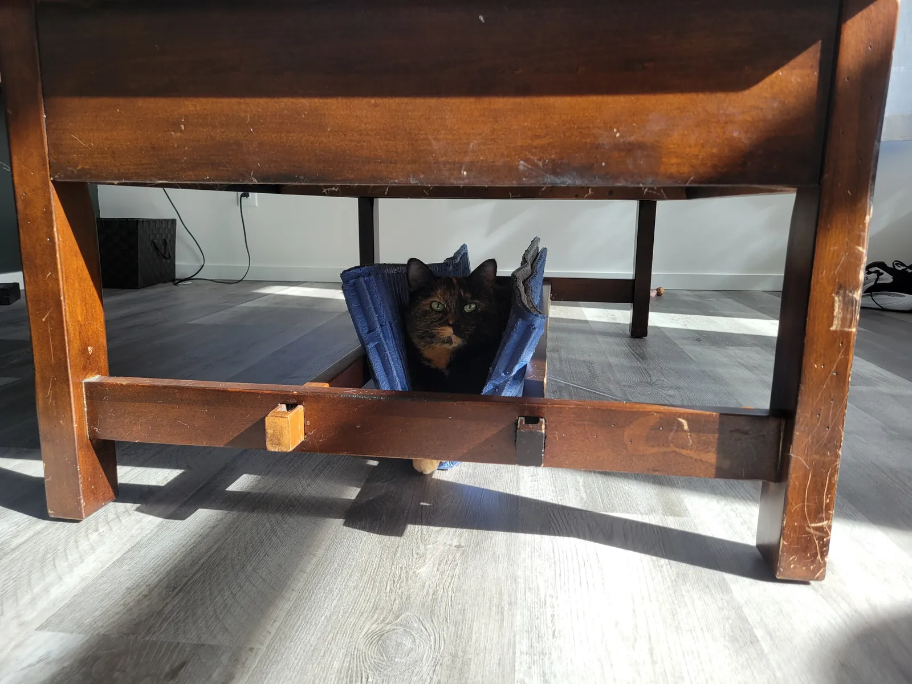
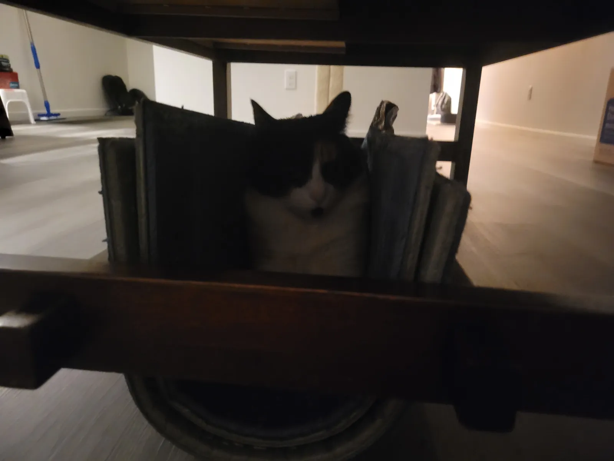
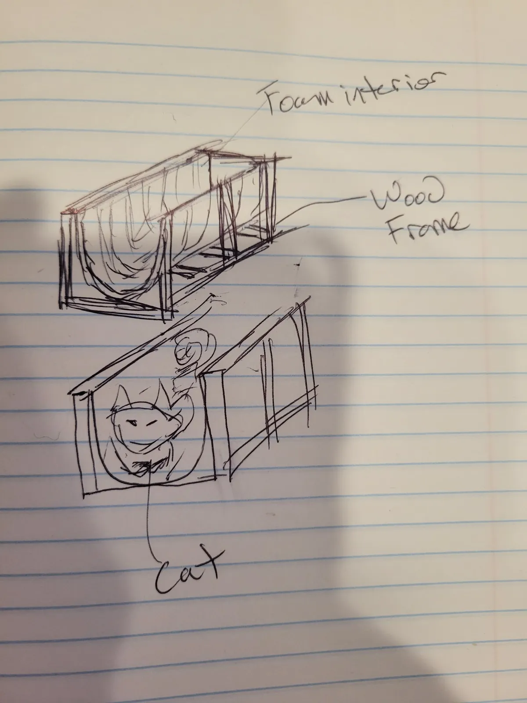
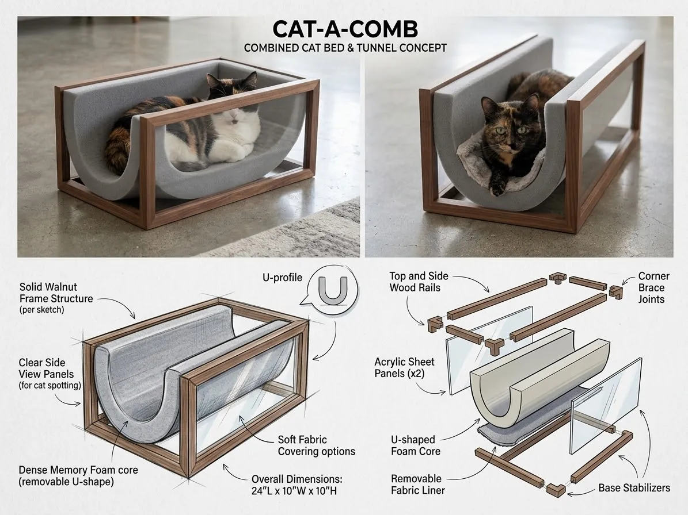
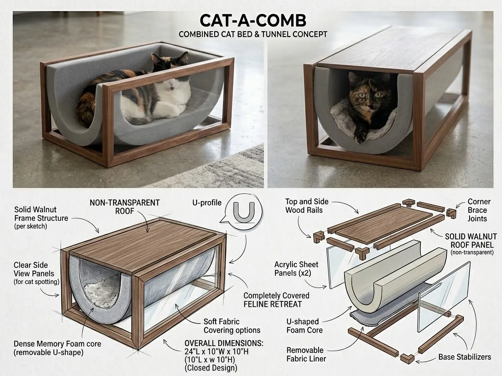
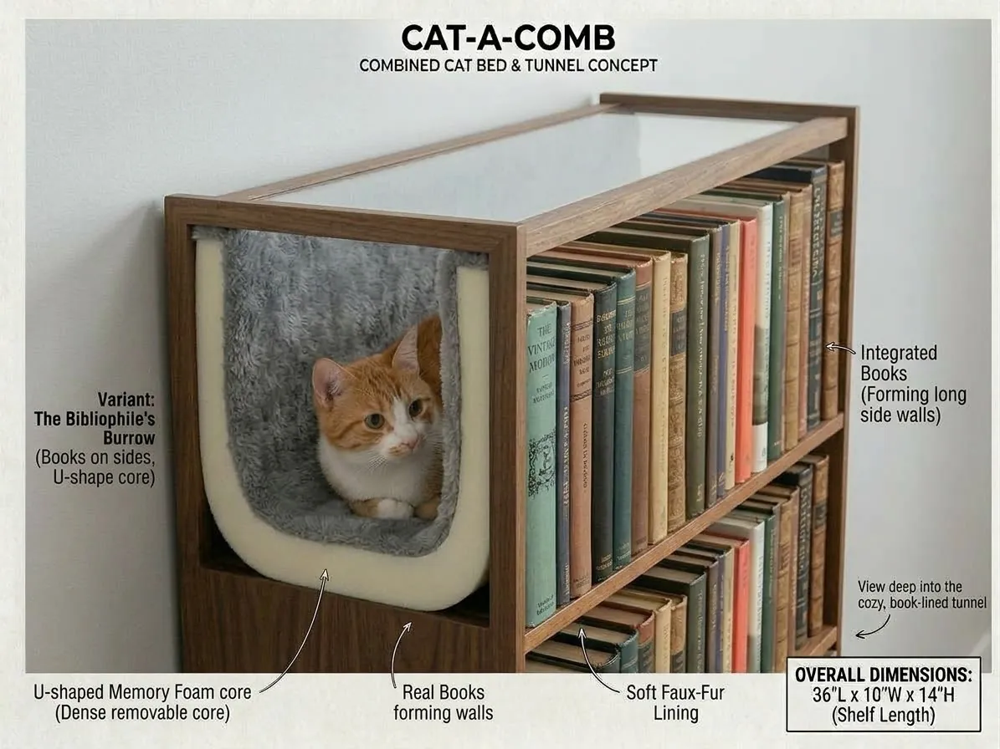

Cat-a-Comb: our cats already chose this bed, so let's build it
A cat bed that is also a tunnel: a rectangular wood frame around a removable U-shaped foam cradle. Our cats found the shape themselves in an improvised version; this brief proposes three designs and a prototype plan.
The short version
- The cats came first. Our cats love an improvised setup: a foam mat folded into a U inside the low wooden frame under a coffee table, and a gap walled in by books. We didn't design it; they chose it.
- Cat-a-Comb turns that into a product: a rectangular wood frame with a flexible foam sling hung between its top rails, in a zip-off washable cover. Like the cats' own version, the foam bends into a U. It's open at both ends, so it works as a bed and a tunnel.
- Three variants are sketched: the Open Cradle and the Closed Tunnel (concept boards show 24″ × 10″ × 10″ outside; the review recommends at least 11″ of inside width), and the Bibliophile's Burrow, built into a bookshelf (36″ × 10″ × 14″).
- The ask: approve working prototypes of the two simplest variants and a home trial with other cats. We'd answer the open questions on materials, cleaning, safety and cost before any production decision. The full build, test and launch plan is in the Cat-a-Comb product plan.
01Our cats picked this shape before we designed it
Neither setup below was built for cats. Both are improvised from what was lying around, and both get used.
The first is a soft foam mat folded into a U and wedged into the low wooden frame under a coffee table. The second is a narrow gap in the same kind of frame, walled in by upright books. Two different cats settle into them.
The improvised version: a wood frame, soft walls on both sides, a curved floor
Real photos of our cats at home






What the cats are telling us
- Walls on both sides. They choose a narrow space they can press against, not an open cushion.
- A curved, padded floor. The folded mat makes a cradle that holds the body.
- Cover overhead, with views out. Both spots sit under a table, with sight lines out of both open ends.
- A frame that holds its shape. The wood keeps the soft walls upright. That's what the product has to replicate.
02The concept: a wood frame with a removable foam sling that bends into a U
The first sketch captured the whole idea in three labels: foam interior, wood frame, cat. The concept work refined it into parts that can actually be built.
From the first sketch: foam interior inside a wood frame
Original hand sketch


| Part | Material (proposed) | What it does |
|---|---|---|
| Frame | Solid walnut (oak or birch as lower-cost options), knock-down joints so it ships flat, non-slip feet, and a non-toxic water-based finish | Holds the foam walls upright, and looks like furniture rather than a pet accessory |
| Core | Recommended: a flexible 1″ high-density foam sheet, certified low-emission, hung from the top rails like a hammock. The concept boards show a moulded memory-foam U, which would need a custom mould, retains heat, and recovers slowly. | The cradle: walls on both sides and a curved floor, the same way the cats' folded mat works |
| Cover | Zip-off cover with a hidden zip and sleeves the top rails slide through. Tight-weave fabric such as canvas or microfibre (looped weaves like bouclé snag claws), with an optional faux-fur topper | Keeps the foam fully enclosed (no chewed foam), and comes off for washing |
| Side panels (optional, to test) | Clear acrylic sheets ×2, with rounded, polished edges | Lets owners see the cat. But acrylic scratches and can crack, so prototype with and without |
| Roof (Closed Tunnel only) | Solid walnut panel, non-transparent | Turns the bed into a covered retreat; the top doubles as a small surface |
03Three variants, from simplest to most ambitious
All three share the same idea: a wood frame and a removable U-shaped core. They differ in how enclosed the cat is and how much the piece doubles as furniture.
1 · Open Cradle: the simplest build, closest to what the cats use today
Concept render and exploded view · 24″ L × 10″ W × 10″ H

2 · Closed Tunnel: the same frame with a walnut roof, for cats who want full cover
Concept render and exploded view · 24″ L × 10″ W × 10″ H

3 · Bibliophile's Burrow: the tunnel built into a bookshelf, with real books as the walls
Concept render · 36″ L × 10″ W × 14″ H (shelf length)

| Variant | Size (L × W × H) | Enclosure | Build complexity | Best for |
|---|---|---|---|---|
| Open Cradle | 24″ × 10″ × 10″ outside (boards) → ~26″ × 11½″ × 11″ inside (recommended) | Open top, both ends open | Lowest | First prototype; cats who like to watch the room |
| Closed Tunnel | As Open Cradle, plus roof | Roofed, both ends open | Low one extra panel | Shy cats; homes that want a usable top surface |
| Bibliophile's Burrow | 36″ × 10″ × 14″ | Walled by books, ends open | Higher a shelf, not a bed | A statement furniture piece; later, once the core design is proven. Use fixed inner walls (books behind or on a panel, not loose books that can fall) and a wall anchor |
04Why it could be a good product, and what is still a hypothesis
The behaviour is real. Everything about the market is still to be tested.
- Furniture, not a pet accessory. A walnut frame sits in a living room the way most plastic and plush cat beds don't.
- Two products in one. It's a bed and a tunnel, and the Closed Tunnel adds a small surface on top.
- Built for real homes. The cover zips off for washing (shedding, hairballs, accidents happen), and a worn cover or foam sheet can be replaced without replacing the frame. That's also a natural accessory sale.
- Simple to make, if the core is a bent sheet. A flat foam sheet in a sewn cover needs no mould, and with knock-down joints the frame ships flat. A moulded U-core would add tooling cost and a much bulkier box.
- Room to grow. Units could join end to end into a longer "catacomb" tunnel, and a replaceable scratch pad at one end gives claws somewhere better than the cover.
The evidence is two of our own cats. We haven't yet tested other cats, costs, pricing, demand or manufacturing. Those are the next steps, not findings.
- Inside dimensions, not outside. At least 11″ inside width is recommended; the boards' 10″ outside leaves ~8½″.
- A foam sling, not a moulded U-core. It's cheaper, ships flat, and copies what the cats already use.
- Safety first: enclosed foam, a hidden zip, non-toxic finish, non-slip feet, no loose books, and an anchor for the shelf variant.
- Tight-weave, washable cover; acrylic sides are now a test question rather than a given.
- Commercial basics added: shipping, returns, and a trademark check.
The full plan, covering spec, build, costs, testing and launch, is in the Cat-a-Comb product plan.
05What we need to learn before deciding to make them
| Question | Why it matters | How we'd answer it |
|---|---|---|
| Do other cats use it? | Two cats is a strong signal, not proof | A home trial: lend prototypes to colleagues with cats and record use |
| Is it big enough inside? | A 10″ outside width leaves only ~8½″ inside the frame. That's tight for an average cat lying on its side, and too small for large breeds. | A cardboard mock-up at ~11½″ inside width before cutting wood; a Large size (~13½″) for big cats |
| Which foam, and how does it clean? | Durability against claws, odour, washability | Sample two or three foam densities and liner fabrics |
| Keep or drop the acrylic sides? | Scratches, cleaning, safety, cost | Prototype with and without; ask owners which they prefer |
| Is it safe? | Cats chew and scratch: exposed foam, zip pulls and small parts are risks. Finishes get licked. A shelf can tip. | Fully enclosed foam with a hidden zip; non-toxic, low-VOC finishes; no small loose parts; non-slip feet; wall anchor for any shelf variant; check chemical-labelling rules (e.g. California Prop 65) with a compliance advisor |
| What does it cost, and what would people pay? | Walnut is premium; the price must match the market | A cost estimate per variant, including alternative woods such as oak or birch ply, plus pricing research |
| Who builds it? | In-house versus a partner workshop; flat-pack versus assembled | Quotes from a small number of makers |
| Can it ship and be returned sensibly? | An assembled 24″ box is bulky to ship. Returned pet beds usually can't be resold. | Flat-pack frame with a rolled foam sleeve; a clear policy, e.g. returns only if unused |
| Can we use the name? | "Cat-a-Comb" or similar names may already be in use | Trademark search before any public launch |
06The ask: build two prototypes and put them in front of other cats
- Check the size with a cardboard mock-up, then build working prototypes of the Open Cradle and the Closed Tunnel. They're the simplest builds and the closest to what our cats already use. Owner: to be confirmed · By: to be set
- Run a home trial with colleagues' cats, recording whether and how often each cat uses it, and what owners say. Owner: to be confirmed · By: after prototypes
- Price it: a cost estimate per variant and a view on the price point. Owner: to be confirmed
- Decide go or no-go on a small production run once the trial and cost answers are in. The Bibliophile's Burrow waits until the core design is proven. Owner: decision group to be named
About this brief
- Evidence
- Real photos of our cats using an improvised version at home (a foam mat in the base frame of a coffee table, and books as walls).
- Design
- An original hand sketch, plus three concept boards. The concept boards are illustrative renders, not photos of built products; dimensions and materials are as labelled on them.
- Review
- Revised Oct 7, 2026 after a pet-product review: sizing, foam construction, safety, materials, shipping and returns.
- Not yet covered
- Testing with other cats, costs, pricing, demand, safety testing and manufacturing. See section 05 and the product plan.
- Images
- All photos were resized for the web and stripped of metadata, including location data. Select any image to open it full size.